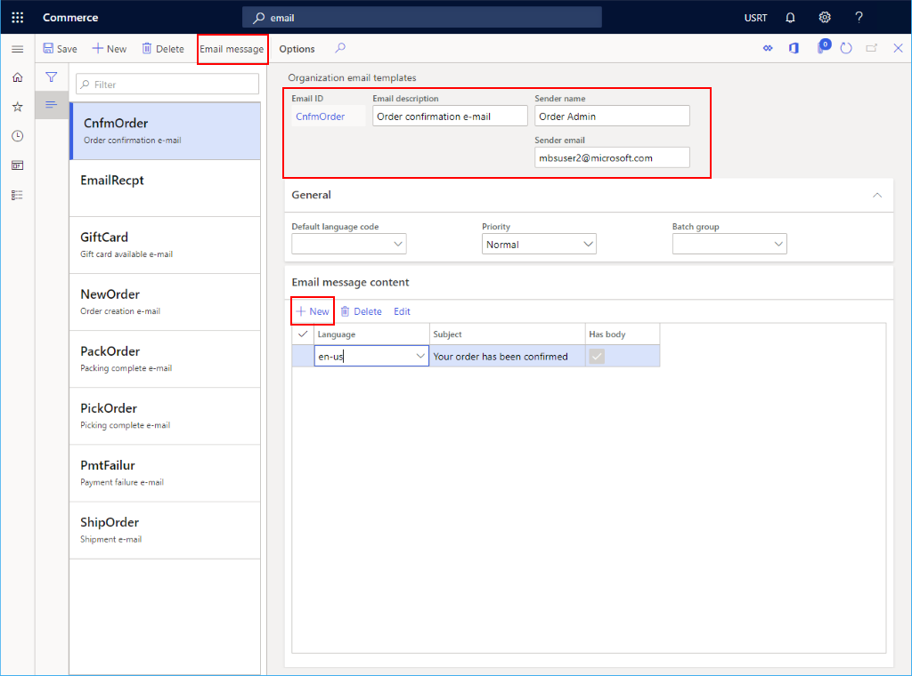
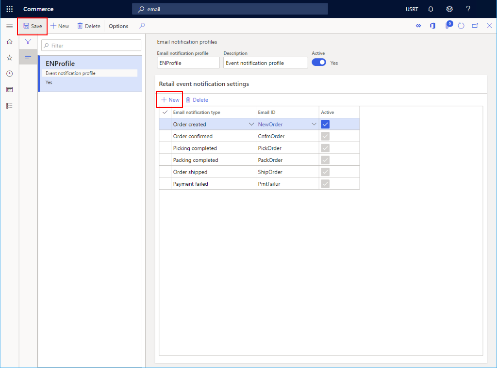

Ein E-Mail-Benachrichtigungsprofil einrichten
Important
Dynamics 365 Retail ist jetzt Dynamics 365 Commerce und bietet umfassende Handelsfunktionen für alle Kanäle – von E-Commerce über Shops bis hin zu Callcentern. Weitere Informationen zu diesen Änderungen finden Sie unter Microsoft Dynamics 365 Commerce.
In diesem Thema wird beschrieben, wie Sie ein E-Mail-Benachrichtigungsprofil in Microsoft Dynamics 365 Commerce erstellen.
Übersicht
Bevor Sie Kanäle erstellen, sollten Sie ein Profil einrichten, um sicherzustellen, dass E-Mail-Benachrichtigungen für verschiedene Ereignisse gesendet werden können, z. B. Auftragserstellung, Auftragsversandstatus und Zahlungsfehler.
Weitere Informationen über die Konfiguration von E-Mails finden Sie unter E-Mail konfigurieren und senden (This is an external link).
Ein E-Mail-Benachrichtigungsprofil erstellen
Gehen Sie folgendermaßen vor, um ein E-Mail-Benachrichtigungsprofil zu erstellen.
- Gehen Sie im Navigationsbereich zu Module > Retail and Commerce > Headquarters-Einrichtung > Commerce-E-Mail-Benachrichtigungsprofil.
- Klicken Sie im Aktivitätsbereich auf Neu.
- Geben Sie im Feld E-Mail-Benachrichtigungsprofil einen Namen ein, um das Profil zu identifizieren.
- Geben Sie im Feld Beschreibung eine entsprechende Beschreibung ein.
- Stellen Sie den Hebel Aktiv auf Ja.
E-Mail-Vorlage erstellen
Bevor eine E-Mail-Benachrichtigung erstellt werden kann, müssen Sie eine Organisations-E-Mail-Vorlage erstellen, die die E-Mail-Informationen des Absenders und die E-Mail-Vorlage enthält.
Führen Sie folgende Schritte aus, um eine E-Mail-Vorlage zu erstellen:
- Gehen Sie im Navigationsbereich zu Module > Retail und Commerce > Zentralverwaltungseinrichtung > Parameter > Organisations-E-Mail-Vorlagen.
- Wählen Sie im Aktivitätsbereich Neu aus.
- Geben Sie im Feld E-Mail-Kennung eine Kennung ein, um diese Vorlage zu identifizieren.
- Geben Sie im Feld Absendername den Namen des Absenders ein.
- Geben Sie im Feld E-Mail-Beschreibung eine aussagekräftige Beschreibung ein.
- Geben Sie im Feld E-Mail des Absenders die E-Mail-Adresse des Absenders ein.
- Füllen Sie im Abschnitt Allgemeines die optionalen Informationen aus, die Sie benötigen (z. B. die E-Mail-Priorität).
- Erweitern Sie die Abschnitt Inhalt der E-Mail-Nachricht und wählen Sie Neu, um den Vorlageninhalt zu erstellen. Wählen Sie für jedes Inhaltselement die Sprache aus und geben Sie den Betreff der E-Mail an. Wenn die E-Mail einen Textkörper haben soll, stellen Sie sicher, dass das Kästchen Hat Text markiert ist.
- Wählen Sie im Aktionsbereich E-Mail-Nachricht, um eine E-Mail-Textvorlage bereitzustellen.
Das folgende Bild zeigt einige Beispieleinstellungen für E-Mail-Vorlagen.

E-Mail-Ereignis erstellen
Führen Sie folgende Schritte aus, um eine E-Mail-Ereignis zu erstellen:
- Gehen Sie im Navigationsbereich zu Module > Retail and Commerce > Headquarters-Einrichtung > Commerce-E-Mail-Benachrichtigungsprofil.
- Suchen Sie in der Liste den gewünschten Datensatz, und wählen Sie ihn aus.
- Wählen Sie die E-Mail-Vorlage aus der Dropdownliste E-Mail-Kennung.
- Wählen Sie aus der Dropdownliste den entsprechenden E-Mail-Kennungstyp.
- Aktivieren Sie das Kontrollkästchen Aktiv.
- Wählen Sie im Aktionsbereich Speichern aus.
Das folgende Bild zeigt einige Beispiele für die Einstellungen der Ereignisbenachrichtigung.

Nächste Schritte
Bevor Sie E-Mails senden können, müssen Sie Ihren Postausgangsdienst konfigurieren und einen Batchauftrag einrichten. Weitere Informationen finden Sie unter E-Mail konfigurieren und senden (This is an external link).
Zusätzliche Ressourcen
E-Mails konfigurieren und senden (This is an external link)